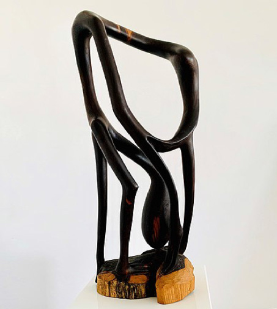

Activity 5.8
Use various sources including the internet to search for more information about the characteristics of Shetani and compare it with the Shetani style object introduced by Samaki Likankoa.
Exercise 5.8
1.
Inspiration plays a great role in leading artists’ creations. How did Samaki Likankoa get the inspiration that led him to come up with the Shetani style?
2.
Shetani (devil) has a different perception in society’s mind. Should all abstract and terrifying curved figures be referred to Shetani style? Give the reasons.
Mawingu style
Mawingu is the Swahili word meaning clouds. The sculpture style was invented by Clement Ngala in 1960s. The sculpture is characterised by figures without defined shapes and according to the founder, he was inspired by the morning clouds as they appeared with undefined forms. Figure 5.12 shows a Mawingu-style sculpture.

Figure 5.12: Mawingu styleSource: https://commons.wikimedia.org/wiki/ File: Makonde_sculpture_half_figure_01. jpg.Retrieved on 26th November 2022